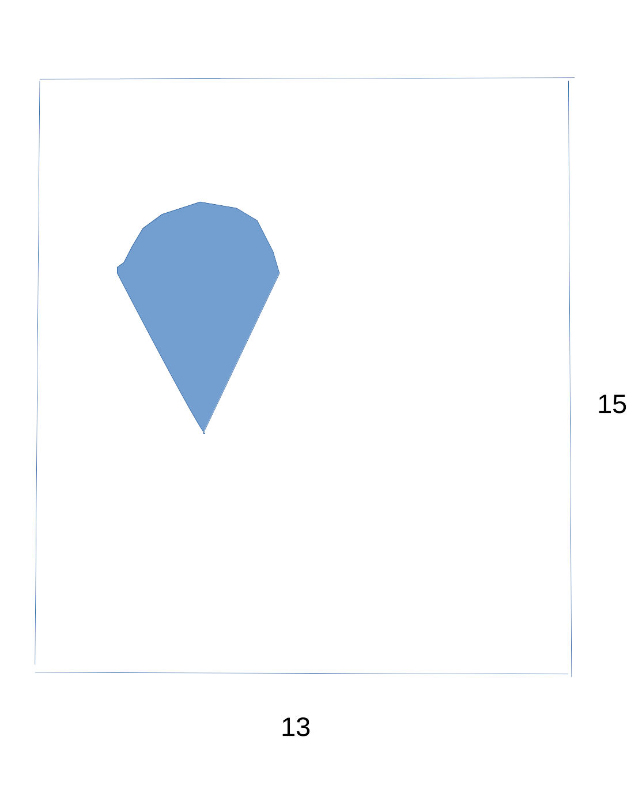
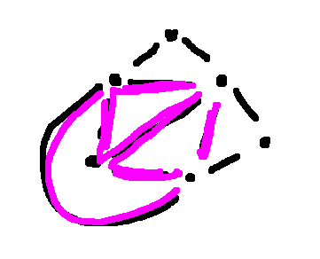
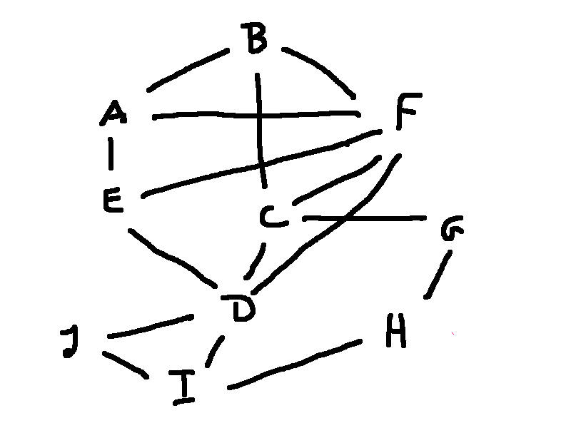

Suppose we'd like to estimate \(\pi\). Here's an approximation to more digits than you'd normally need: 3.14159265359.
If we have to compute \(\pi\) ourselves, rather than asking the internet, we might need to use numerical approximations. These might give us an upper bound of 3.1416 and a lower bound of 3.1415. If we're doing a calculation involving \(\pi\), we could use these to figure out how much our approximation might change the final result.
But upper and lower bounds don't have to be so close to the actual number. For example, 3 is a lower bound on \(\pi\). OK, not so bad. But -10 is also a lower bound on \(\pi\). An lower bound on \(\pi\) is any number \(\le \pi\). -10 is just not a very helpful lower bound.
Here's practical example of upper and lower bounds. Suppose that we have rolled out a big sheet of cookie dough and would like to cut cookies out of it. Here a 13" by 15" sheet of dough and a sample cookie.

Collecting scraps and rolling out the same dough again damages the texture, so we'd like to get as many cookies as possible out of each sheet. So here I've tried to pack in as many cookies as possible:
Looks like I managed to fit in 10 cookies. So 10 is a lower bound on how many cookies can be made out of this sheet of dough.
To get an upper bound, let's look at the areas. This cookie is a bit more than 14 square inches. The sheet of dough is 195 square inches. Dividing the two gives us 13.93 cookies. So an upper bound on the number of whole cookies is 13.
Notice that there is a gap between the lower bound of 10 and the upper bound of 13. Since this is an irregular shape, it's not clear how many more cookies I can fit into the sheet.
This problem shows up in a more serious form in the clothing industry. Manufacturers need to cut large pieces of cloth into the pieces that will be sew to make clothing. Scraps of cloth are hard to re-use. So they put significant effort into making the cutting pattern (called a "marker") so as to maximize usage of the cloth. Notice that they need to make a lot of markers, because a given garment (e.g. a shirt) would be made in a large range of sizes. Although it's hard to get a provably optimal solution, marker making programs can produce good approximate ones.
Now, let's look at graph coloring. In graph coloring, we need to put a color on each node, with the rule that adjacent nodes may not have the same color. So consider this graph:
We can color it with four colors like this:
And it's actually impossible to color it with three colors, because this graph contains a \(K_4\), i.e. a graph with four nodes and all possible edges. Since all pairs of nodes in \(K_4\) are connected by an edge, none of them can have the same color.

The "chromatic number" of a graph is the minimum number of colors required to color it. To show that 4 is the chromatic number of the graph above, we had to show two things:
We used different methods to show the two bounds. We proved that 4 was an upper bound on the chromatic number by showing a coloring of the graph with four colors. We proved the lower bound of 4 by finding a \(K_4\) inside our graph.
It's helpful to be familiar with the chromatic numbers of various special graphs. If you find one of them in your large complex graph, that gives you a lower bound on its chromatic number. Also, a special subgraph is often a good place to start when trying to color your full graph.
As we just saw above, a complete graph \(K_n\) requires n colors.
If the graph has any edges at all, it requires at least two colors. (A 1-colorable graph has no edges.)
It's easy to test if a graph is 2-colorable. You can start coloring anywhere, using only two colors, and see if you run into any problems. Notice that 2-colorable means bipartite.
The chromatic number of a cycle \(C_n\) depends on whether the number of nodes is odd or even. Even cycles need two colors; odd cycles need three.
Wheel graphs are similar, except that an extra color is needed for the node in the middle. Notice that \(W_n\) has n+1 nodes.

You can often make a good guess at a graph's chromatic number by looking for the special graphs above. However, to be sure, you need to color the whole graph. For example, here's a graph that is made entirely out of triangles but has chromatic number 4.
Have a look at this big complex graph.

With a bit of fiddling, you can figure out that it can be colored with four colors. But do we actually need all four?
We do need four colors, because this graph contains an odd wheel. Its rim contains nodes A, B, C, D, E. Its hub is node F.